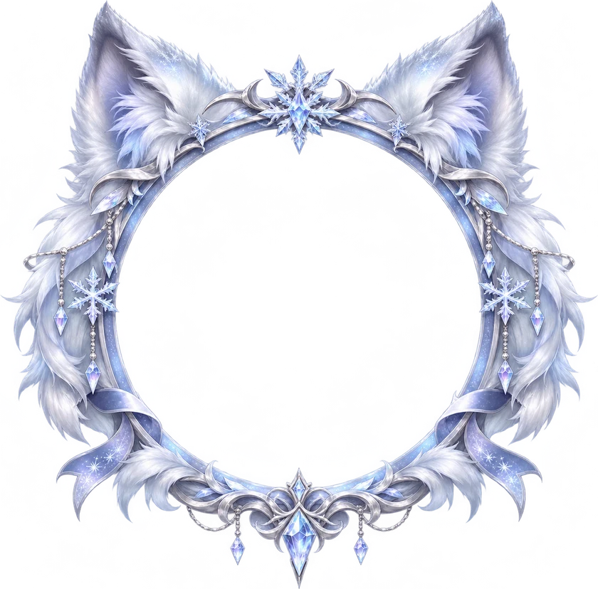

0:000:00
音量
Playlist
狼Choisis le dossier qui contient tes musiques,
ou glisse ici tes fichiers audio / .mp4.
ou glisse ici tes fichiers audio / .mp4.
Espace : lecture/pause · ← → : ±5 s · Maj + ← → : piste précédente/suivante · M : muet · S : aléatoire · R : répétition